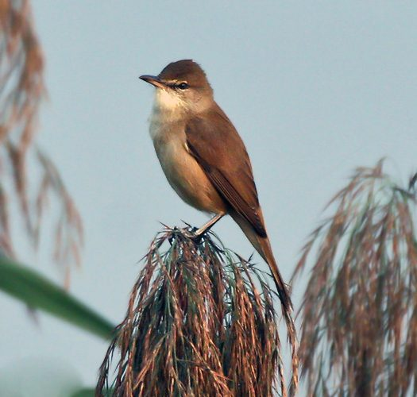

क्लैमरस रीड वार्बलरClamorous Reed Warbler
Acrocephalus stentoreus · Acrocephalidae · BRD-0204

- Scientific name वैज्ञानिक नाम
- Acrocephalus stentoreus (Hemprich & Ehrenberg, 1833)
- Family कुल
- Acrocephalidae
- Hindi हिंदी
- क्लैमरस रीड वार्बलर
- Local names स्थानीय नाम
- clamorous reed warbler, warbler
- Status here यहाँ की स्थिति
- native
- Movement आवागमन
- Resident; numbers rise with migrants
- Known from कहाँ दर्ज
- Others have published records from the Basti–Ayodhya districts बस्ती–अयोध्या के ज़िलों से दूसरों के प्रकाशित अभिलेख
- IUCN IUCN
- LC
- Review समीक्षा
- audited and independently read
When to look कब देखें
Expected mainly in January, February, March, April, May, June, September, October, November, December. मुख्यतः जनवरी, फ़रवरी, मार्च, अप्रैल, मई, जून, सितंबर, अक्टूबर, नवंबर, दिसंबर में अपेक्षित।
Northern and western populations breed March–July and migrate; eastern populations partially resident. In eastern UP, numbers increase with winter arrivals from September; departures by May. Found in reed beds of Ghaghra, Rapti, and wetland systems. All migrants and visitors →
Uses and possibilities उपयोग और संभावनाएँ
Drawn from the documented uses in the profile below, where each is labelled traditional, current or a research lead. All uses →
Tell it apart from इनसे अलग पहचानें
क्लैमरस रीड वार्बलर / Clamorous Reed Warbler
Acrocephalus stentoreus (Hemprich & Ehrenberg, 1833) — Acrocephalidae
क्लैमरस रीड वार्बलर — भूरे रंग की एक मध्यम आकार की चिड़िया जो पूर्वी उत्तर प्रदेश के तालाबों और नदियों के सरकंडों में छिपी रहती है। इसकी बहुत जोर की, कर्कश और दोहराई जाने वाली पुकार इसका नाम बताती है। सर्दियों में इसकी संख्या बढ़ जाती है। यह सरकंडों के बीच खाना खोजते हुए तेजी से चलता है।
Quick Identification त्वरित पहचान
| Feature | Description |
|---|---|
| Size | Medium warbler; 19–21 cm long |
| Build | Robust, stocky; long tail |
| Plumage | Uniform brown above; pale buff underparts |
| Head pattern | No prominent markings; plain face |
| Tail | Graduated, often cocked upright |
| Bill | Long, pointed, slightly curved |
| Behaviour | Skulking in reed beds; loud raucous call |
| Vocalization | Very loud, harsh call; distinctive |
Field tip: A sturdy, brown warbler hidden in reed beds. The extremely loud, raucous, repeated call is instantly recognizable — often the only way to detect this skulking species. Look for it clambering among reed stems, rather than flitting at the reed-bed top.
हिंदी — कैसे पहचानें:
मध्यम आकार की भूरी चिड़िया।
सरकंडों में छिपी रहती है।
बहुत जोर की, कर्कश आवाज़।
पूंछ अक्सर ऊपर की ओर खड़ी।
Morphology आकारिकी
Biometrics:
| Measurement | Range |
|---|---|
| Total length | 190–210 mm |
| Wing | 80–95 mm |
| Tail | 85–100 mm |
| Bill | 18–22 mm |
| Tarsus | 24–28 mm |
| Weight | 23–35 g |
Size: 19–21 cm long; wingspan 25–27 cm. A large warbler by acrocephalid standards.
Plumage: Uniform rufous-brown above, including crown and nape. No supercilium or eye-stripe. Underparts pale buff to whitish, slightly warmer on flanks. Tail rufous-brown, often held cocked upright. Wings dark rufous-brown with pale fringes on flight feathers and coverts.
Sexual dimorphism: Minimal. Males slightly larger than females; plumage similar.
Bill: Long, pointed, slightly decurved; adapted for probing among reed stems.
Legs and feet: Dark; adapted for clambering through reed beds.
Juveniles: Similar to adults but slightly duller.
Vocalisations. Call repertoire:
- Main call: A loud, harsh, scratchy churr-churr-churr or errr-errr-errr, often repeated at intervals. Frequency.
- Contact calls: Softer chattering notes between individuals.
- Song: Harsh warbling interspersed with the characteristic loud churring calls.
हिंदी: जोर की, कर्कश "चुर-चुर" या "एर-एर" आवाज़। गीत भी कठोर और दोहराया जाने वाला।
Behaviour & Ecology व्यवहार और पारिस्थितिकी
Reed-bed specialist: Clamorous Reed Warbler is highly specialized for life among reed beds and reedy wetlands. It feeds on:
- Small aquatic and aerial insects
- Small beetles and bugs
- Damselflies and dragonflies
- Small caterpillars
- Occasionally small spiders
Foraging: Methodical climber among reed stems, searching crevices and picking insects from vegetation. Sometimes takes insects in short sallies from reed tops.
Social behaviour: Often solitary or in pairs. Sometimes loose aggregations at reed beds. Males highly territorial during breeding season, with overlapping territories common in suitable habitat.
Vocalization: One of the loudest warblers, with calls carrying far across wetlands. Loud, raucous calls maintain territory and contact.
Predators: Snake eagles, buzzards, hooded crows. Chicks vulnerable to crows and snakes in nest.
Water dependency: Completely dependent on reed beds and reedy wetland vegetation; never found in drier habitats.
हिंदी: सरकंडों में पूरी तरह निर्भर। छोटे कीड़े खाता है। बहुत जोर से गाता है। पूरे दिन सक्रिय रहता है।
Life Cycle / Phenology जीवन चक्र
| Month | Event |
|---|---|
| January–February | Winter residents in eastern UP; singing less frequent |
| March–April | Spring passage; some depart northward; early breeding activity |
| May–June | Breeding season on northern grounds; absent from eastern UP |
| July–August | Post-breeding moult; some return to eastern UP |
| September–October | Autumn arrival of migrants; establishment in reed beds |
| November–December | Peak presence of winter residents; territorial singing |
Breeding: Not confirmed to breed in eastern UP; mostly summer breeders further north in Uttar Pradesh and central Asia. Nests in reed beds, cup-shaped nest woven among reed stems. Clutch 3–5 eggs.
Moult: Prebasic moult occurs before arrival at wintering grounds (July–September).
Site fidelity: Some individuals show strong philopatry to particular reed beds, returning in successive winters.
हिंदी: मार्च-अप्रैल में कुछ पक्षी उत्तर की ओर जाते हैं। सर्दियों में वापस आते हैं। सितंबर से मई तक मुख्य रूप से मौजूद।
Host Plants or Prey आहार
| Food Type | Examples | Feeding Behaviour |
|---|---|---|
| Aquatic insects | Damselflies, dragonflies, aquatic beetles | Picked from reed stems and water surface |
| Aerial insects | Small flies, gnats, mosquitoes | Gleaned from vegetation; sometimes caught in short flights |
| Small caterpillars | Lepidopteran larvae | Searched among reed leaves |
| Spiders | Small web spiders | Picked from reed vegetation |
हिंदी: पानी के कीड़े और मक्खियाँ खाता है। सरकंडों की पत्तियों पर से कीड़े चुनता है।
Predators / Natural Enemies शत्रु
- Avian predators: Steppe Eagle, Upland Buzzard, Hooded Crow, possibly Marsh Harrier
- Mammalian predators: Rarely; some predation by mongooses and snakes
- Nest predators: Snakes, crows, possibly monitor lizards
- Parasites: Parasitic mites and lice
हिंदी: बड़ी शिकारी चिड़ियाँ और सांप इसका शिकार कर सकते हैं।
Agricultural / Human Relevance कृषि प्रासंगिकता
Protected species: The Clamorous Reed Warbler is protected under the Wildlife (Protection) Act 1972. Hunting is prohibited in India.
Pest control: Feeds on small insects, including mosquitoes and gnats, providing a minor pest-control benefit.
Wetland indicator: Its presence indicates the presence of healthy reed-bed habitats with good insect populations.
Cultural relevance: Its loud calls are distinctive features of Asian wetlands, mentioned in various cultural and natural history accounts of Indian wetlands.
Conservation concern: Dependent on reed-bed habitats which are increasingly threatened by water extraction, drainage, and conversion to agricultural land.
हिंदी: यह विधि अधिनियम 1972 के तहत संरक्षित है। इसका शिकार करना कानूनी रूप से निषिद्ध है।
Expected Locally स्थानीय रूप से अपेक्षित
Not a field record. Written from published accounts for eastern Uttar Pradesh. No confirmed local sighting yet — if you have seen it, that is what the atlas needs.
अभी तक स्थानीय पुष्टि नहीं। यह विवरण प्रकाशित स्रोतों से है, किसी अवलोकन से नहीं।
Winter range: Expected in eastern UP from September to May in reed-dominated wetlands. GBIF holds published records from these districts. Suitable habitats include the Ghaghra and Rapti river systems, particularly their floodplain reed beds and associated tanks.
Habitat preference: Extensive reed beds of permanent and semi-permanent water bodies. Most likely in large wetlands with dense reed cover.
Peak season: December–February, when numbers peak with northern migrants.
Identification by sound: Often detected by its loud, raucous calls before being seen; listen for the harsh, repeated churring notes from reed beds.
What a first record would be: A dated photograph or clear audio recording of the bird in eastern UP submitted through the About page, with location and date.
हिंदी: सरकंडों वाले तालाबों और नदियों में सर्दियों में अपेक्षित। इसकी जोर की आवाज़ से इसका पता चलता है। घाघरा और राप्ती नदी के पास रीड बेड में देखे जाने की संभावना।
Distribution वितरण
Global range: Across much of Asia from the Middle East to Japan, including North Africa and southern Europe. Migratory in northern parts, resident in southern parts.
In India: Widespread as winter visitor and partially migrant; resident in southern India. Occurs on all major river systems and wetland areas.
In Uttar Pradesh: Throughout the state in suitable reed-bed habitats; more common as winter visitor in eastern districts.
In Basti district / eastern UP: Likely regular winter visitor in reed beds of the Ghaghra and Rapti river systems and associated wetlands; extent of residency unclear.
Research Questions शोध प्रश्न
- What is the seasonal status of Clamorous Reed Warbler in eastern UP — winter visitor only, or partial migrant with residents?
- How do changes in reed-bed management and wetland water levels affect its presence and abundance?
- What is its diet composition in eastern UP during winter compared with breeding season habitats?
- क्या सर्दियों के महीनों में इसकी जनसंख्या वार्षिक रूप से बदलती है?
- What invertebrate communities support this species in the Ghaghra-Rapti reed beds? (A child can collect invertebrates from reed beds during different seasons.)
- क्या भारतीय रीड बेड्स में इसके प्रजनन के प्रमाण हैं?
Similar Species मिलती-जुलती प्रजातियाँ
| Species | Key Difference | Hindi | Field Rule | |
|---|---|---|---|---|
| [[blyths_reed_warbler\ | Blyth's Reed Warbler]] (Acrocephalus dumetorum) | Smaller, more slender; less loud call | ब्लिथ की रीड वार्बलर | Clamorous is larger, stockier, and much louder. |
| Indian Swiftlet (Aerodramus unicolor) | Black bird; lives in caves and cliffs | दीपक चिड़िया | Completely different habitat and coloration. | |
| Blyth's Leaf Warbler (Phylloscopus reguloides) | Smaller; greenish plumage; different habitat | पत्तियों की चिड़िया | Clamorous is much larger and stays in reed beds. |
Field rule: The Clamorous Reed Warbler is a large, robust, brown warbler with an extremely loud, harsh, raucous call from reed beds. No other warbler in the region is this large and loud. If it is smaller and softer-voiced, it is likely Blyth's Reed Warbler.
Taxonomy & Classification वर्गीकरण
Original description. The species was described by Hemprich and Ehrenberg in 1833 in the genus Acrocephalus. The type locality is Egypt.
Subspecies. Multiple subspecies across the range; the Indian population is A. s. stentoreus.
Family and order placement. Order Passeriformes; family Acrocephalidae (warblers, grassbirds). The genus Acrocephalus is a large group of Asian warblers adapted to reed beds.
Phylogenetic notes. Closely related to other reed-bed specialists in the genus. Part of a clade of large Acrocephalus species.
IUCN status rationale. Assessed as Least Concern (LC) globally. Populations are stable and widespread. The species is adaptable to various reed-bed habitats across Asia. In India, it is protected under the Wildlife Protection Act 1972.
हिंदी: विश्वभर में कई स्थानों पर पाई जाती है। भारत में सरकंडों वाली जगहों पर रहती है। कानून से पूरी तरह सुरक्षित है।
Photo Gallery फोटो गैलरी
No photos yet — add field photos to media/species/clamorous_reed_warbler/ and run node scripts/sync_photos.js.
Wanted photos:
- Adult in reed bed
- Close-up of head
- Singing male
- Foraging behaviour
- Habitat: typical reed-bed environment
References संदर्भ
- Hemprich, C. F. & Ehrenberg, C. G. (1833). Symbolae Physicae. Abhandlungen der Königlichen Akademie der Wissenschaften zu Berlin, Zoologische Klasse.
- Ali, S. & Ripley, S. D. (1973). Handbook of the Birds of India and Pakistan. Vol. 9 (Warblers to Redstarts). Oxford University Press, Delhi. Pp. 98–102.
- Cramp, S. (ed.) (1992). Handbook of the Birds of Europe, the Middle East and North Africa: The Birds of the Western Palearctic. Vol. VI (Warblers). Oxford University Press. Pp. 410–420.
- Rasmussen, P. C. & Anderton, J. C. (2005). Birds of South Asia: The Ripley Guide. Smithsonian Institution, Washington, D.C. Pp. 467–468.
- GBIF Occurrence Data — Acrocephalus stentoreus, India.
- IUCN Red List (2024). Acrocephalus stentoreus — BirdLife International assessment. IUCN, Cambridge. Status: Least Concern.
Source file: species/fauna/birds/clamorous_reed_warbler.md